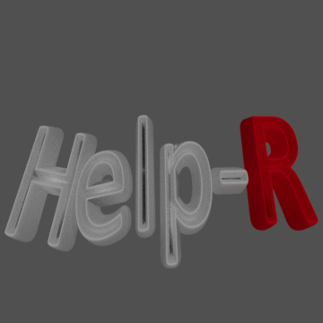

Construim un robot care sa gaseasca persoane blocate intr-o salina(Help) si sa cerceteze(R-research). Acest robot este controlat de la distanta si transmite video si audio,explorand spatiile greu accesibile oamenilor, colectand mostre de sol si
masurand parametrii fizico-chimici ai mediului cercetat pentru a stabili daca este propice vietii(pH-ul apei,diferenta de altitudine,prezenta gazelor toxice/ a oxigenului, prezenta radiatiilor, a vibratiilor)
,cauta fiinte aflate in dificultate , ofera un minim prim ajutor (trusa medicala) si transmite toate datele catre statia de comanda, pentru a fi analizate.

Echipa noastra este formata din patru elevi:
Vlad Logyin
Clasa a 10-a
CNMB
Simina Dinu
Clasa a 10-a
CNMB
Sebastian Severin
Clasa a 10-a
CNMB
Popescu Cezar Gabriel
Clasa a 9-a
Liceul Ovidius